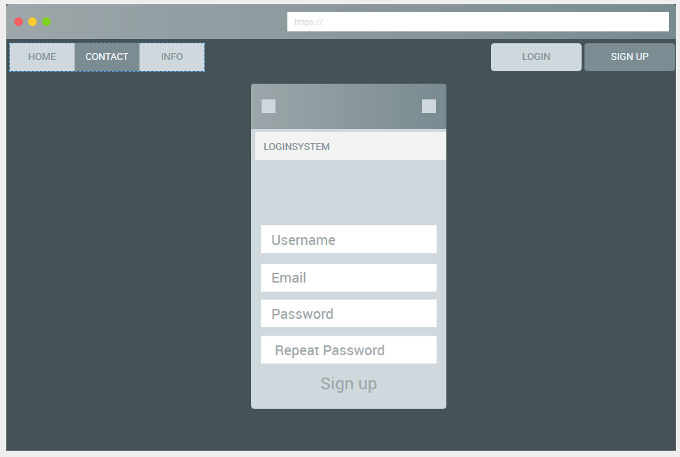
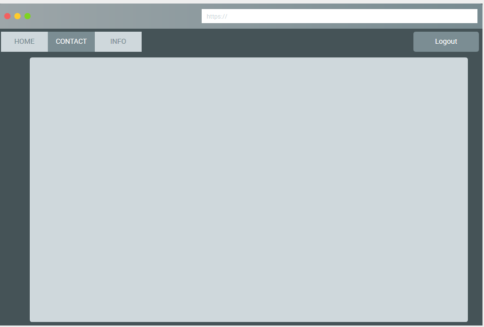

Web-palvelinohjelmoinnin (TTMS0900) harjoitustyöksi valikoitui "kirjatumispalvelu", jossa voidaan luoda käyttäjätunnukset ja tämän jälkeen kirjatuminen on mahdollista joko sähköposti/salasana tai käyttäjänimi/salasana yhdistelmää
hyödyksi käyttäen.
Tekijä: Joni Kananen
Tarkoituksena on luoda täysin toimiva kirjautumispalvelu, jossa on otettu huomioon mahdolliset virhetilanteet. Tarkoituksena on myös, että harjoitustyössä otettaisiin huomioon tietoturvallisia riskejä ja niiden estämistä. Koska tietokantaan pitää tallentaa käyttäjän luoma salasana, joudumme totta kai "hashaamaan" sen, että se olisi mahdollisimman vaikea arvata mahdollisen hakkerin iskiessä.


*Harjoitustyön mockup
Harjoitustyön ollessa kirjatumispalvelu, joudumme totta kai luomaan tietokannan johon voimme tallentaa käyttäjän luoman datan. Tietokanta luodaan paikallisesti tietokoneelle, eikä esim. MYSQL Workbench-ohjelmaa käyttäen. Päädyin harjoitustyössä käyttämään perinteisen MYSQL:n sijaan sen "uudempaa" versiota eli MYSQLi:ä.
Koska harjoitustyö tarvitsee tietokannan, loin hyvin simppelin jossa on vain kaikki tarpeellinen.
Tietokanta pitää sisällään seuraavat asiat: käyttäjäId, käyttäjänimi, sähköposti ja salasana.
![]()
*Yläpuolella näkyvä kuva näyttää, kuinka tietokanta on luotu komentorivillä.
Tässä hieman avattuna mitä mahdollisia virheitä on otettu huomioon käyttäjän luodessa tunnuksia tai yrittäessään kirjautua palveluun.
Käyttäjä ei täytä kaikkia tarvittavia tietoja.Kerrotaan, että virhe tapahtui ja pyydetään täyttämään kaikki kentät.
Käyttäjä ei luo oikeassa muodossa olevaa sähköpostia. Kerrotaan, että vääränlainen sähköposti.
Käyttäjä tekee näppäilyvirheen pyydettäessä toistamaan salasana uudelleen. Kerrotaan, että ensimmäinen ja toinen salasana eivät olleet samat.
Käyttäjä yrittää kirjautua palveluun, mutta sähköpösti/käyttäjänimi eivät vastaa tietokannasta löytyviin tietoihin.Varsinaisesti mitään ei tapahdu, mutta ilmoitamme käyttäjälle URL-palkissa, että antamasi tieto ei ollut oikea (php?error=wronguidpwd).
Käyttäjä yrittää kirjautua palveluun, mutta salasana ei vastaa tietokannasta löytyvään tietoon.Varsinaisesti mitään ei tapahdu, mutta ilmoitamme käyttäjälle URL-palkissa, että antamasi tieto ei ollut oikea (php?error=wronguidpwd).
![logginFailed]()
*Kuva kertoo mitä URL:ssa näytetään pieleen menneen kirjautumisen jälkeen.
Alussa käyttäjällä ei ole mitään tunnuksia palveluun. Tällöin joudumme luomaan
uudet tunnukset. Lomake löytyy signup.php:sta, jossa myös annamme virhe-viestit jos kohtia ei ole täytetty asianmukaisesti.Suurin taika kuitenki tapahtuu signup.inc.php:ssa. Aluksi liitämme mukaan SQL-yhteyden sisältävän scriptin: require 'dbh.inc.php', jotta voimmme käyttää sitä myöhemmin. Signup.inc.php:ssa haemme kaiken datan, jota käyttäjä on asettanut lomakkeella ja tarkastelemme, että kaikki on täytetty oikein. Tarkastamme tietokannasta, että sieltä ei löydy vastaavia käyttäjänimiä. Jos vastaavia ei löydy pääsemme lähettäämän datan tietokantaan, jonka jälkeen asetamme lomakkeisiin placeholderit.Onnittelut, loit juuri uuden käyttäjän.
Loit juuri uuden käyttäjän. Nyt voit kirjautua palveluun luomillasi tunnuksilla. Voit kirjautua palveluun joko käyttäjänimi/salasana- tai sähköposti/salasana-yhdistelmällä.Tarkastellaan hieman login.inc.php kohtaa. Alussa otamme taas SQL-yhteyden sisältän scriptin mukaan, jotta voimme käyttää sitä myöhemmin. Tarkastamme, että lomake ei ole tyhjä, ja jos on niin annamme URL:ssa error-viestin. Jos kaikki oli niin, kuin pitääkin, voimme luoda yhteyden tietokantaan. Alustamme statementin, käytämme SQL-yhteyttä ja tarkastamme ettei löydy erroreita. Virheitä ei löydy ja pääsemme jatkamaan.Bindataan data, suoritetaan prepared-statement ja lähetetään se tietokantaan. Saamme vastauksen takaisin. Tallennamme saadun tiedon mysqli_fetch_assoc-muuttujaan. Tämän jälkeen pääsemme vertailemaan salasanoja, että tietokannoissa oleva vastaa kirjautujan asettamaan. Salasanojen ollessa samat, alustamme session_start:n,
luomme Session-muuttujat ja asetamme datan näihin. Tämän jälkeen web-sivu rekisteröi käyttäjän kirjautuneena sisään.
Harjoitustyön kehittäminen
Harjoitustyö jäi vajaaksi siitä mitä olin alun perin ajatellut, mutta syy tähän on vain se, että en kerennyt saamaan web-ohjelmoinnin harjoitustyötä tarpeeksi pitkälle, jotta sen liittäminen olisi ollut järkevää.
Kirjautumispalvelua tai ns. "loginSysteemiä" voisi kehittää vielä pidemmälle. Siihen voisi mm. lisätä muitakin ehtoja, mm. mitä ja miten tarkastellaan kirjautumista. Siitä voisi myös saada hyvän pohjan
muihin harjoituksiin/projekteihin, kun kerran tilin luonti ja kirjautuminen on jo hoidettu alta pois.
Todennäköisesti tulen jatkamaan loginSysteemin parissa jatkossa omalla ajallani ja pyrin jalostamaan siitä paremman.
Sovellusta on myös helppo jatkaa muissa projekteissa ja ulkoasua voisi aina muuttaa vain tarpeiden mukaan.
Ehdotan annettavaksi harjoitustyöstä arvosanaksi numeron 1. Harjoitustyö ei ollut kovin "laaja", mutta itselle siinä oli äkkiseltään tarpeeksi haastetta ja sovellus on toimiva. Pienillä korjauksilla/parannuksilla
saisi siitä vielä paremman. Aikaa harjoitustyöhön meni ~40-50h. Ehdottomasti eniten aikaa meni MYSQLi:n syntaksin kanssa säätäessä.